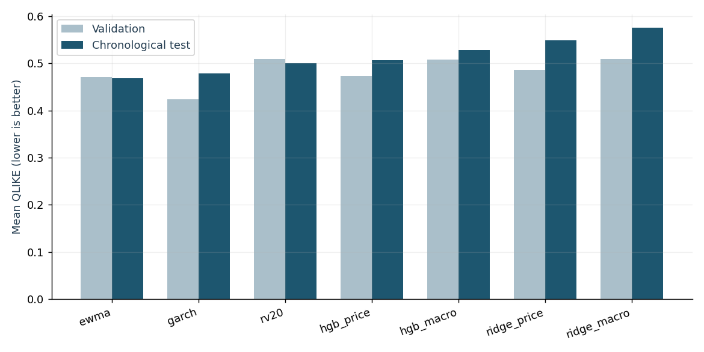
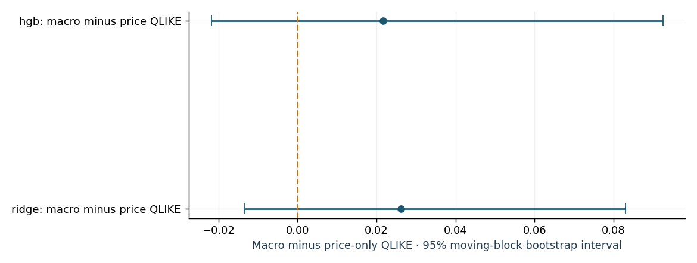
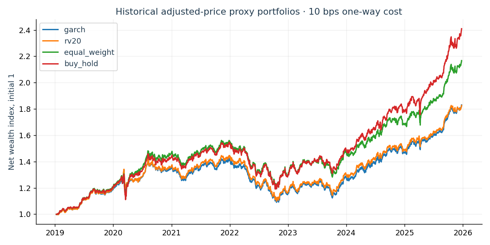

Do macroeconomic vintages improve
market-risk forecasts?
A chronological comparison of statistical and machine-learning forecasts, with next-session execution and explicit trading-cost assumptions.
1. Research design
Universe: SPY, TLT, GLD. Market history 2005-01-03 to 2025-12-31. Signals every five trading sessions after a 252-session warm-up. Macroeconomic inputs use dated ALFRED snapshots, conservatively available from the day after each vintage date. No current-vintage substitution is allowed.
Features are observed at close t. Positions are assumed entered at open t+1 and held until open t+6. The forecast target is annualized mean squared log adjusted-open returns over those five held intervals. Learned models train only on labels ending strictly before their refit date. Hyperparameters and the champion are chosen on 2014–2018 validation; prequential test decisions begin in 2019. Refit every 13 signal periods.
This is retrospective research, not a prospectively registered strategy or live trading track record. Adjusted open is a research return proxy derived from Yahoo's adjustment factor, not an executable historical share price. A three-ETF universe chosen today does not remove selection bias. No raw market prices are redistributed with this report.
2. Forecast evaluation
Validation
| model | observations | qlike | variance_mse | volatility_mae |
|---|---|---|---|---|
| garch | 753 | 0.4236 | 0.0005 | 0.0421 |
| ewma | 753 | 0.4713 | 0.0005 | 0.0391 |
| hgb_price | 753 | 0.4739 | 0.0004 | 0.0364 |
| ridge_price | 753 | 0.4866 | 0.0004 | 0.0361 |
| hgb_macro | 753 | 0.5079 | 0.0004 | 0.0357 |
| rv20 | 753 | 0.5086 | 0.0005 | 0.0402 |
| ridge_macro | 753 | 0.5091 | 0.0005 | 0.0363 |
Chronological test
| model | observations | qlike | variance_mse | volatility_mae |
|---|---|---|---|---|
| ewma | 1050 | 0.4687 | 0.0026 | 0.0557 |
| garch | 1050 | 0.4789 | 0.0024 | 0.0547 |
| rv20 | 1050 | 0.4996 | 0.0030 | 0.0563 |
| hgb_price | 1050 | 0.5061 | 0.0024 | 0.0485 |
| hgb_macro | 1050 | 0.5278 | 0.0026 | 0.0484 |
| ridge_price | 1050 | 0.5487 | 0.0032 | 0.0504 |
| ridge_macro | 1050 | 0.5749 | 0.0049 | 0.0556 |

3. Does macro information help?
ridge: macro minus price QLIKE: the estimated mean loss difference is 0.0262 (higher loss with macro features); its 95% block-bootstrap interval [-0.0133, 0.0829] includes zero. Holm-adjusted p=0.5994 across the two predeclared macro contrasts.
hgb: macro minus price QLIKE: the estimated mean loss difference is 0.0217 (higher loss with macro features); its 95% block-bootstrap interval [-0.0218, 0.0924] includes zero. Holm-adjusted p=0.5994 across the two predeclared macro contrasts.
| comparison | mean_difference | ci_low | ci_high | p_two_sided | periods | block_periods | bootstrap_repetitions | holm_adjusted_p |
|---|---|---|---|---|---|---|---|---|
| ridge: macro minus price QLIKE | 0.0262 | -0.0133 | 0.0829 | 0.2997 | 350 | 13 | 1000 | 0.5994 |
| hgb: macro minus price QLIKE | 0.0217 | -0.0218 | 0.0924 | 0.5834 | 350 | 13 | 1000 | 0.5994 |

Bootstrap units are signal dates, averaging loss across assets before resampling to preserve cross-asset dependence. Circular moving blocks contain 13 five-session periods. The two focal macro comparisons receive Holm adjustment; this does not correct for every possible strategy previously researched.
4. Portfolio implementation
Forecast-based allocations use inverse predicted volatility, a 60% asset cap, a 10% forecast portfolio-volatility target, no leverage, and zero interest on residual cash. Covariance correlations use only the preceding 252 closes. Costs are applied to the L1 risky-weight change, including initial entry and final liquidation. Holdings drift between scheduled rebalances. Equal-weight rebalancing and buy-and-hold are comparators, not equal-risk guarantees.
| model | CAGR % | Volatility % | sharpe_zero_cash | Max drawdown % | mean_period_turnover |
|---|---|---|---|---|---|
| rv20 | 9.0471 | 9.0010 | 1.0092 | -23.9944 | 0.0911 |
| ewma | 9.1335 | 8.9749 | 1.0207 | -23.4992 | 0.0675 |
| garch | 9.0789 | 9.2468 | 0.9879 | -23.3622 | 0.0809 |
| ridge_price | 9.4904 | 9.4393 | 1.0097 | -24.4290 | 0.0713 |
| ridge_macro | 8.5516 | 9.3840 | 0.9231 | -24.2866 | 0.0719 |
| hgb_price | 9.6038 | 9.3712 | 1.0274 | -24.8847 | 0.0730 |
| hgb_macro | 10.0796 | 9.4756 | 1.0629 | -24.0868 | 0.0690 |
| equal_weight | 11.7603 | 10.1374 | 1.1497 | -23.5363 | 0.0153 |
| buy_hold | 13.4760 | 10.3662 | 1.2739 | -23.0434 | 0.0029 |

Cost sensitivity for the validation-selected champion
| model | cost_bps | cagr | annualized_volatility | sharpe_zero_cash | max_drawdown |
|---|---|---|---|---|---|
| garch | 0 | 0.0954 | 0.0925 | 1.0334 | -0.2302 |
| garch | 5 | 0.0931 | 0.0925 | 1.0107 | -0.2319 |
| garch | 10 | 0.0908 | 0.0925 | 0.9879 | -0.2336 |
| garch | 25 | 0.0839 | 0.0925 | 0.9195 | -0.2410 |
5. Interpretation and limits
The research conclusion follows the measured loss differences above. A favourable backtest is not proof of an exploitable signal or future performance; a failure to outperform is a valid research outcome. Allocation risk differs across models and benchmarks. Daily open-based drawdowns omit within-session extremes, cash earns zero, and the transaction-cost model omits size-dependent market impact, taxes and broker-specific fills.
Small five-day realized-variance labels are noisy. ETF selection, free-data corrections and limited hyperparameter search remain material limitations. Macroeconomic vintage availability is checked at daily rather than intraday granularity. GARCH fallback refits: 0. Paper tracking is separate and has no historical live-performance claim.
6. Reproduce and audit
Inspect experiment_spec.json, selection.json, provenance.json, validation_search_log.csv, training_audit.csv and the per-date prediction/weight files. Run python -m macroquant run from your own downloaded source cache. Source changes can change results; raw response hashes are recorded. The configuration was written before this run and was not selected using test performance.